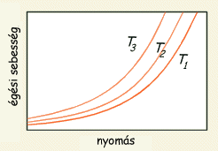

A lõporos üzemanyagok az amatõr rakétaüzemanyagok igen népszerû táborát alkotják. Ezeknek a "lõporszerû" és az angolban egyszerûen csak BP-nek (black powder) titulált kompozícióknak köszönhetõ az amatõr rakétázás kialakulása és elterjedése. Mind a mai napig az amatõr rakétások kezdõ üzemanyagai maradtak, elenyészõ az olyan amatõr rakétások száma akik valaha nem valamilyen lõporos motorral kezdték "pályafutásukat".
A fekete lõpor a legrégebbi rakétaüzemanyagnak számít. Nem tudni pontosan hogy mikor fedezték fel, de már az 1200 körüli arab és kínai leírásokban megjelenik. Ezen írások úgy lõfegyverekben mint rakétában való felhasználását is említik, így a lõpor kétségkívül a legelsõ (és hosszú ideig az egyetlen) ismert hajtóanyag volt. A XX. századig használt rakétaüzemanyagok szinte kivétel nélkül lõpor-alapúak voltak, az idõk során csupán az összetevõk aránya mádosult. Nem csoda hát, hogy a rakétakutatás kezdetét jelentõ XX. század eleji rakétakísérletek is a fekete lõporra alapoztak. Az elsõ kompozit üzemanyagok kifejlesztése is a lõporhoz kötõdik, hiszen a modern kompozitok elõdje lõpor és bitumen keveréke volt. A 40'-es években kifejlesztett jóval erõsebb kompozit üzemanyagok elterjedésével a lõporos üzemanyagok háttérbe szorultak, mára már kizárólag kisebb modell- illetve tüzijátékrakéták meghajtására használják õket. Az amatõr rakétázásban is igencsak lecsökkent a jelentõségük az erõsebb kategóriát képviselõ cukros üzemanyagok térhódításával.
A hagyományosnak számító összetétel 75/15/10 vagy 75/12.5/12.5 tömegarányú KNO3/C/S keverék. Az ilyen lõporokat lõfegyverekben használták régen és még a mai vadászpuskák töltényeiben is találkozhatunk velük. Az ilyen összetételû porok magas nyomáson túl gyorsan égnek, mert a nagy nyomáskitevõ miatt égésük könnyen átmegy robbanásba, amikor is az égési sebesség elérheti a 400000 mm/s-ot. A rakétamotorban érthetõ módon ez egyáltalán nem kívánatos, ezért hát az idõk során különféle módszerekkel próbálták csökkenteni a hadászati lõpor égési sebességet. Ezen módszerek közül a préselés és a kompozíció módosítása (a szén és/vagy kén túladagolásával) vált be leginkább. Thaiföldi falvakban rendezett ünnepeken még ma is nedvesítik a lõport a rakétába való préselés elõtt, hogy lassabban égjen. Ezeket a rakétákat el kell engedni még mielõtt kiszáradna bennük a lópor, mert késõbb felrobbanhatnak. Szerencsére inkább az jellemzõ, hogy túlnedvesítik a lõport, így aztán csak a földön sistereg a rakéta.
A nedvesítésnél jobb módszer az égési sebesség csökkentésére az 1.7-1.75 g/cm3-re való préselés. Ez megakadályozza az égésnek az üzemanyag tömegébe való terjedését (tulajdonképpen nem a lõpor fog lassabbann égni, hanem a lõportömb). A préselés hatékonyságát fokozza a lõporhoz adagolt kis mennyiségû ragasztóanyag (dextrin vagy keményítõ), ami még kompaktabb üzemanyagblokk készítését teszi lehetõvé.
|  |
| 1. Ábra: Lõpor égési sebessége a nyomás és hõmérséklet függvényében |
A megoldást az oxidálószer/tüzelõanyag arány módosítása jelenti. Az alacsonyabbkálium-nitrát- valamint megnövelt széntartalom garantálja, hogy nem lesz elég oxigén az égéshez, így egy lassabb égésû üzemanyaghoz jutunk. Ami ennél is fontosabb, hogy a nyomáskitevõ értéke csökken, a fenti diagram görbéi valamivel laposabbak lesznek. Az ilyen módosított üzemanyagok nagyobb nyomástartományban képesek elég gyorsan, de még a robbanás veszélye nélkül égni. Ez a gyakorlatban annyit tesz, hogy pl. egy 75/15/10 KNO3/C/S összetételû üzemanyagot használó motor nagyon érzékeny lesz a fúvókaátmérõre. Ha a fúvóka kicsit nagyobb átmérõjû mint kellene, az üzemanyag égése nem tud eléggé felgyorsulni, és a motor nem fog elég tolóerõt fejleszteni. Ha a fúvóka picit szûkebb a kelleténél akkor felugrik a nyomás és az égési sebesség és felrobban a motor. Ugyanez a motor, de 75/25/5 KNO3/C/S arányú lõporral mûködni fog kicsit nagyobb vagy kisebb fúvókával is, mivel a nyomás kisebb métrékben befolyásolja az üzemanyag égési sebességét mint az elõzõ kompozíció esetén. Ajánlatos tehát ilyen lassú égésû üzemanyagot használni, különösen ha nem áll lehetõségünkben az 1,7 g/cm3-re való préselés.
Az 1. Táblázatban néhány lõporos üzemanyag összetétele látható. A harmadik sorban a gyári ESTES motrok kompozíciója található, ezzel csak akkor érdemes próbálkozni, ha van egy hidraulikus présünk, amellyel minden esetben 1.7 g/cm3-re tudjuk tömöríteni, illetve ha pontosan tudjuk méretezni a fúvókaátmérõt. Ellenkezõ esetben lehet, hogy felrobbannak a készített motrok. A K66 illetve N66 az általam is használt hajtóanyagok. Be kell valljam, hogy a K66 összetétele XVII. századi rakétás feljegyzések átlagolásaként született, nem pedig "tudományos" fejlesztés eredménye. Más kérdés, hogy késõbb modellezõ könyvekben is hasonló összetételekre találtam. Az N66 nem más mint a K66 nátrium-nitrátos verziója, amelyet a KNO3-ínség szült. Szerencsére, mert így kiderült, hogy jobban teljesít mint a K66, ha sikerül szárazon tartani. Az egész csupán tárolás kérdése, a NaNO3 tartalmú üzemanyagokat nedvességtõl elzárva kell tárolni.
üzemanyag KNO3 NaNO3 C S dextrin Isp (s) BP #1 72 - 24 4 - 136 BP #2 - 69 27 4 - 150 ESTES 71.79 - 13.81 13.45 0.95 137 K66 66 - 23 11 - 130 N66 - 66 23 11 - 149 Kénmentes 80 - 20 - - 143 Ajánlott 65 - 70 (60 - 70) 20 - 30 5 - 10 1 - 3 130 - 150 1. Táblázat:
néhány lõporos üzemanyag
százalékos összetétele és
fajlagos impulzusa (elméleti
Isp értékek).
A táblázatban szereplõ fajlagos impulzusértékek az elméleti Isp-t jelölik, a gyakorlati Isp ettõl jóval elmarad. A káliumnitrátos lõporos üzemanyagok gyakorlati Isp-je általában 70...85 s között van, gyári motrok esetén pedig néha eléri a 90 s-t is. Valószínûnek tartom, hogy a nátriumnitrátos üzemanyagok gyakorlati Isp-je 90...100 s körül van, de ezt nem tudom mérési adatokkal alátámasztani.
A lõporos üzemanyagokat a motorba préseléssel kell "beleszorítani". Megfelelõ préselés során egy kemény (körömmel nehezen karcolható) tömbbé áll össze a lõpor, fõként ha dextrin is szerepel az összetevõk között. A lõporos motrok alacsony üzemi nyomása miatt a motorba préselt lõportömb nem mozdul el akkor sem, ha felsõ részén a motor nincs "bedugaszolva". A préselést hagyományosan présrúddal és fakalapáccsal végezték, az eljárás ma is meglehetõsen elterjedt. Hidraulikus préssel persze jobban szabályozható a préselési nyomás, de egy bronzrúd meg egy fakalapács könnyebben beszerezhetõek és teljes mértékben kielégítõ megoldást kínálnak. A lõporos üzemanyagok elvileg ütésre nem érzékenyek, így szárazon is préselhetõek, de a biztonság kedvéért érdemes egy kis etilalkohollal nedvesítve préselni, így kisebb eséllyel fog begyúlni. A 80%-os egészségügyi szesz tökéletesen megfelel erre a célra. Lassú adagolással és erõs kalapálással elérhetõ az 1.6-1.7 g/cm3, amely elegendõ a jó motormûködéshez. Ha dextrin is tartalmaz az üzemanyag, feltétlenül nedvesítve kell préselni.
A lõporos üzemanyagok minõsége nagyban függ a készítés módjától. A káliumnitrátot külön, a ként és a szént pedig összekeverve nagyon finom porrá kell õrölni. Ezt követõen össze kell keverni õket és nedvesen golyósmalomban össze kell õrölni (néhány óra hosszan). Ezzel a módszerrel kapjuk a legjobb minõségû üzemanyagot. A komponenesek õrlése egyáltalán nem veszélyes addig, amíg külön vannak, akár kávédarálóban is lehet õrölni õket. Veszélyes viszont a keveréket õrölni, mert a legkisebb szikrától is könnyen begyullad. Golyósmalomban néha ellenõrizni kell, hogy eléggé nedves-e az üzemanyag. Ha az összetételben valamilyen ragasztóanyag szerepel, akkor ezt csak a motorba préselés elõtt kell hozzáadni.
Golyósmalom híján egy mozsár és egy jó adag türelem is kielégító minõségû üzemanyagot eredményez. Az õrlés ez esetben is kevés vízzel nedvesítve kell történjen, hogy a KNO3 feloldódjon és behatoljon a szén pórusaiba. Az üzemanyag õrlés közben kell megszáradjon, mert különben a KNO3 kikristályosodhat, ami nem megfelelõ keveredést eredményez az üzemanyagrészecskék között. Õrlés után a keveréket érdemes átszitálni.
A biztonságos lõporgyártás való törekvés eredménye a nedves lõporgyártás technikája (amelyet Amerikában néha CIA-metódusként is emlegetnek, mivel egy "urban legend" szerint a CIA fejlesztette ki). Az eljárás abban áll, hogy a szükséges KNO3 mennyiségbõl forró vízben telített oldatot készítünk és ebbe keverjük a finomra õrölt kén/szén keveréket (természetesen miután már nincs tûz az oldat közelében). A metódus a KNO3 azon tulajdonságán alapul, hogy magas hõmérsékleten nagységrendekkel jobban oldódik vízben mint szobahõmérsékleten. Így a forró KNO3-szén-kén massza kihûlés után egy kissé nedves lõport eredményez, amely már könnyen kiszárítható. A nedves eljárást nem ajánlatos NaNO3 tartalmú üzemanyagok készítésére használni, ezek higroszkópossága miatt.
Pro: A lõporos üzemanyagok elõnye, hogy az összetevõk viszonylag könnyen beszerezhetõek. Ventillált kénport bárhol találunk, a faszén pedig legrosszabb esetben vízzel kioltott parázsból is lesz. A KNO3 a kertészboltból fog elõkerülni, olcsó és nem kell hozzá engedély. NaNO3 kapható a vegyszerboltban, dextrint meg magunk készíthetünk a keményítõ pirításával, így hát igazából zökkenõmentes az alapanyagok beszerzése. Néhány országban engedély nélkül vásárolható a vadészatra használt lõpor is. A lõporos motrok viszonylag egyszerûen, kevés szerszámmal és meglehetõsen biztonságosan elkészíthetõek. A magas égési sebesség lehetõvé teszi hátulégõs motrok készítését, amelyek talán a legegyszerûbbek a rakétamotrok közül. Az alacsony üzemi nyomás kedvez a papírfalú motroknak és megkönnyíti az idõzítõ- illetve kidobótöltet elhelyezését is, hiszen ezek egyszerûen rápréselhetõek az üzemanyagra. Lõporos üzemanyag használata elõnyös továbbá esti kilövéseknél iletve tüzijátékrakéták esetén, mert az izzó szénrészecskéknek köszönhetõen fõnyes csóvát hagy maga mögött.
Kontra: Bár a cink-kén üzemanyaghoz képest már erõsnek számítanak, a lõporos üzemanyagoknak még mindig meglehetõsen alacsony a fajlagos impulzusa (a szintén egyszerûen elkészíthetõ cukros üzemanyagok kb. másfélszer erõsebbek). A préselt üzemanyagtömbök igen rigidek és nagyobb méretek esetén hajlamosak megrepedni, ami az égésfelület növekedése miatt motorrobbanáshoz vezet. Emiatt nagyobb motrokban inkább más üzemanyagot érdemes használni. A nem lassított égésû lõporok magas nyomáskitevõje is okozhat kellemetlenségeket. Hátrány még a szénporral való koszos munka is, ami igencsak árt a lõporos üzemanyagok népszerûségének.
Konklúzió: Más amatõr üzemanyagokkal összevetve a lõporos üzemanyagok egy viszonylag gyenge üzemanyagkategóriát képviselnek, de kielégítõen teljesítenek kisebb rakétamotrokban. Elõnyei miatt még mindig használatos egyszerûbb egyhasználatos rakétamotrok és tüzijátékrakéták készítésére.